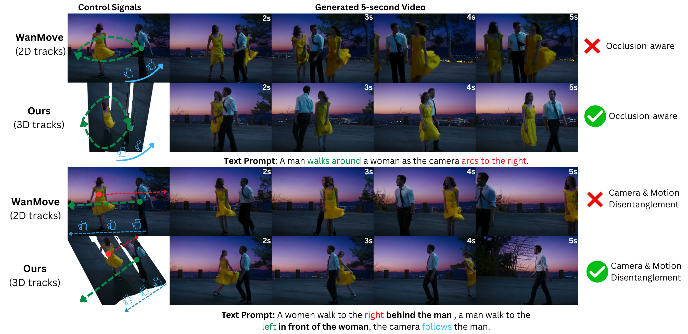
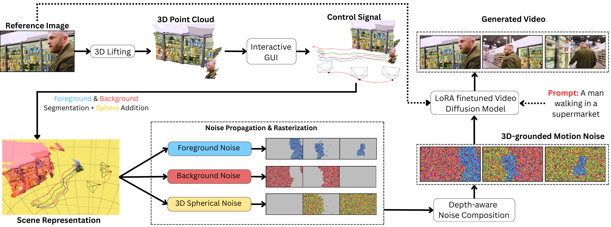

Qualcomm AI Research‡ · *Equal contribution · †Binh-Son Hua is affiliated with Trinity College Dublin, Ireland. Work done under consultancy capacity. · ‡Qualcomm AI Research is an initiative of Qualcomm Technologies, Inc.
{vlong, tanngo, karnewar, ahabibia, hson, hungbui, minhhoai, phongnh}@qti.qualcomm.com

Three noise layers and one composition rule turn 3D object tracks and a camera path into a single 3D-grounded motion-consistent noise. Click any card to expand.

Each 3D point track on the segmented objects is projected with the target camera pose onto the latent grid, and a 3×3 patch (R = 2) of reference-frame noise is copied along the trajectory.
Going from pure Gaussian noise to foreground propagation more than halves the trajectory error (EPE 8.23 → 3.98). R = 2 is best on all five metrics: a smaller patch weakens the motion signal; a larger one interferes with neighbouring tracks.
The reference image is unprojected with its estimated depth; each point carries Gaussian noise in place of its colour. The cloud stays fixed in world space and is rasterized at every camera pose.
The background encodes scene layout, a camera signal that foreground tracks alone cannot supply. Adding it cuts RotErr from 7.76 to 1.51 and TransErr from 30.45 to 18.42.
A sphere centred at the reference camera carries a fixed latitude–longitude Gaussian texture. Rays cast through each latent location sample it, so the same direction gets the same noise in every view.
Radius r = max(τ·max‖Ct−C1‖, dmax) with τ = 1.2. The sphere is not scene geometry, only a consistent motion prior; its gain is specific to camera fidelity (TransErr 18.42 → 16.27), with FID and FVD unchanged.
When several foreground or background points land on one latent cell, the one closest to the camera wins, instead of arbitrary ordering or averaging. Cells still empty take the spherical noise.
Ordering by depth helps throughout the sequence, not only at visible occlusions: EPE 3.35 → 2.95 and CamMC 19.56 → 16.74 over 2D compositing. Without it, a moving object's noise is overwritten by the background and the object stays static.
Why this works. Most controllers inject motion late, through added modules, from 2D cues that are ambiguous in depth and viewpoint. UniCaMo encodes motion up front, in the noise, from 3D cues, so the model starts from a latent already consistent with the target camera and object motion.
Training & inference. LoRA (rank 64) on Wan2.1-I2V-14B with flow matching: 10K steps on 400K clips, with ViPE, SAM3 and TAPIP3D signals used only to build the noise, never as conditioning. At inference the GUI's tracks and camera path drive the same construction: ~0.2 s overhead, no new parameters.
Our 3D-grounded noise versus Go-with-the-Flow's 2D optical-flow noise warping, both built from the same ground-truth video. Each method tile shows the noise; hover it to see the generated video.
How the motion-consistent noise is built at training time and used at inference time.
Qualitative comparisons for in-the-wild, object motion, camera, and joint camera-and-object control. Click a thumbnail to choose an example.
Interactive GUI for unified camera and object motion control. Select objects with polygon masks on the 2D image, then edit their 3D trajectories and the camera path with 6-DoF gizmos in the 3D view.
Video generated from the object tracks and camera path defined above. The motion enters only through the constructed noise.
Page layout adapted from the Academic Project Page Template (in turn adapted from Nerfies). Released under CC BY-NC-SA 4.0.